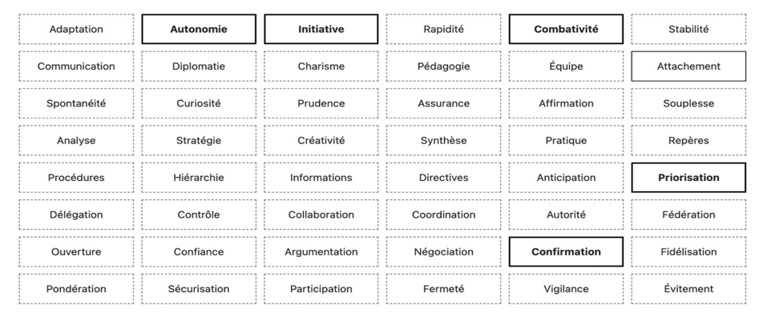
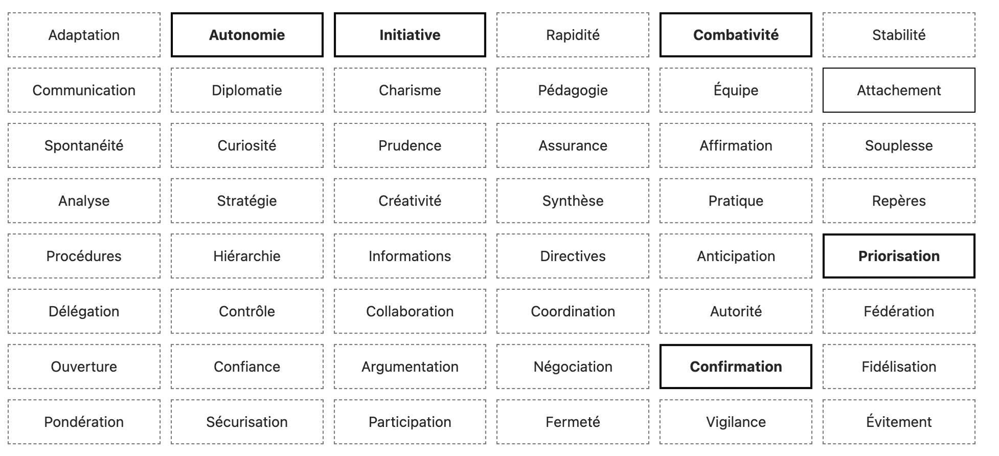
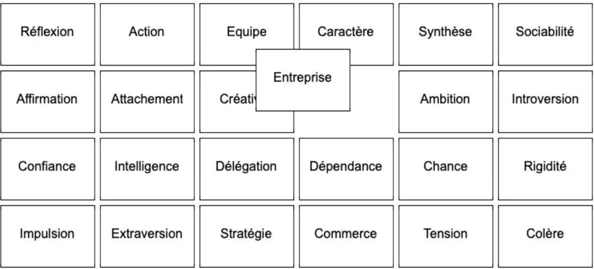
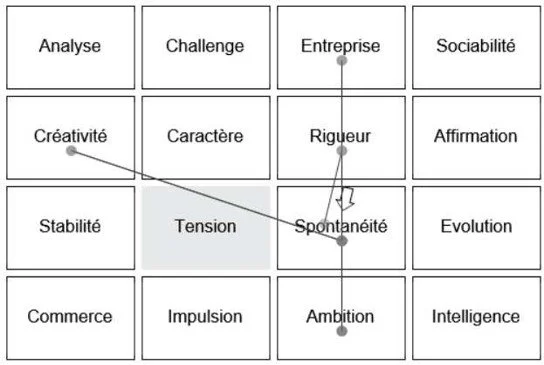
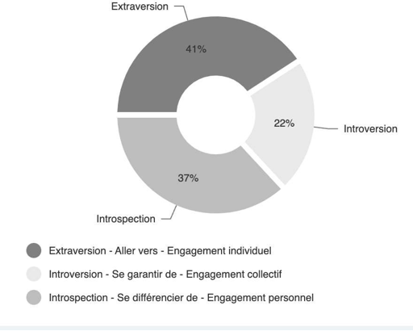
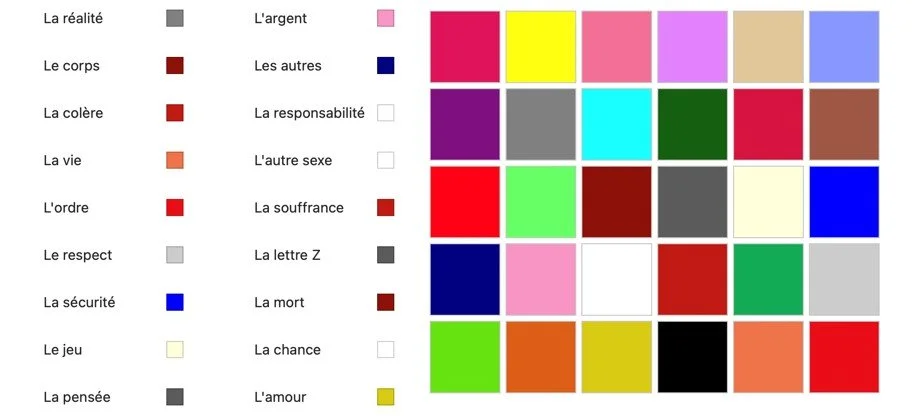
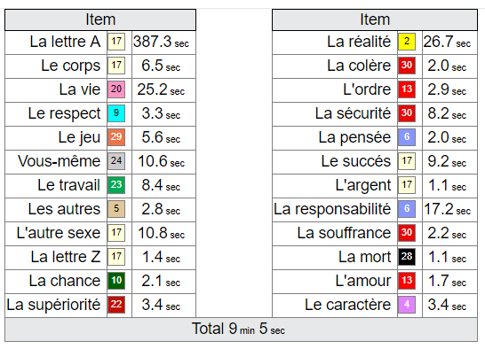
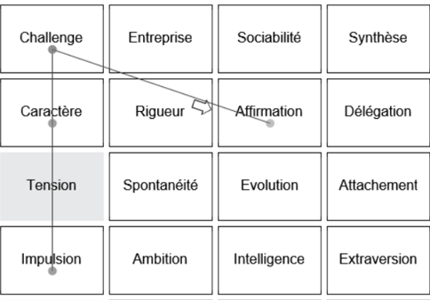
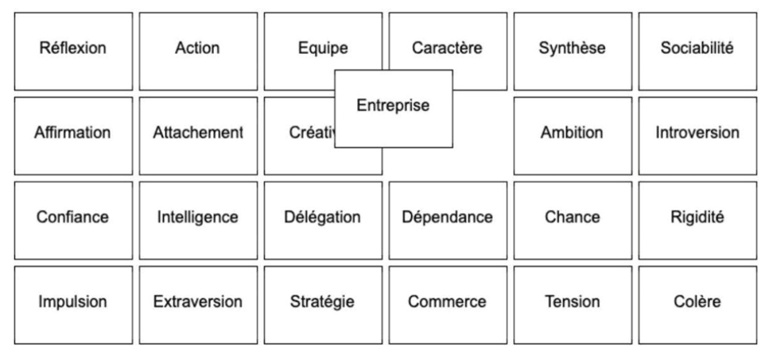
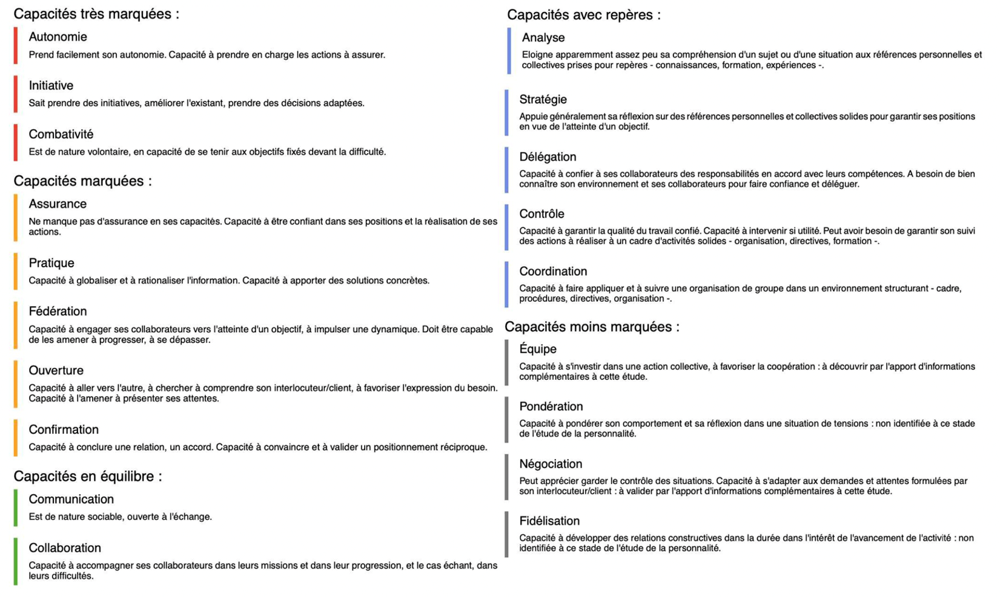

Les outils.
Un guide qui
structure l'information.
Major Exchanges met à disposition des équipes RH un environnement de travail complet : plateforme web sécurisée, questionnaire en ligne, guide d'entretien structuré et IA de pré-analyse. Les 48 critères comportementaux sont paramétrés pour chaque mission.
L'outil structure l'entretien sans le contraindre : il propose la grille, les relances et les exercices d'auto-positionnement nécessaires pour recouper l'information, sans remplacer le jugement de l'expert RH.

Grille des 48 critères · soft skills cartographiées par dimension
Un outil partout
où vous en avez besoin.
Plateforme web
Accès sécurisé à votre espace de travail. Gestion des dossiers candidats, passation du questionnaire, analyse des résultats depuis n'importe quel poste.
Entretiens à distance
Partage du guide et des exercices interactifs avec le candidat en visio. La méthodologie conserve toute son efficacité en configuration distancielle.
Entretien en présentiel
Utilisation sur tablette lors des entretiens en présentiel. L'interface tactile permet de partager les exercices avec le candidat sans rompre la dynamique d'échange.
Un process clair,
du brief à la restitution.
Définition des requis
Ouverture du dossier candidat ou collaborateur. Définition des requis sur les 48 critères comportementaux et motivationnels pertinents pour la mission.
Entreprise / ConseillerPassation du questionnaire
Le candidat répond au questionnaire en ligne à son rythme (45 min en moyenne). L'IA produit une première analyse des tendances comportementales, prête à être recoupée en entretien.
CandidatEntretien guidé
Conduite de l'entretien en visio ou sur tablette en présentiel (1h en moyenne). Mises en situation et exercices d'auto-positionnement pour recouper l'information.
RecruteurTrois écrans, trois temps de l'étude.
Captures réelles du système expert Major Exchanges : grille de positionnement, analyse séquentielle des choix, restitution graphique.

Grille des 48 critères · sélection des capacités

Grille IPS · positionnement autour de l'entreprise

Analyse séquentielle · liens entre les choix

Restitution · répartition des modes d'engagement
Une passation simple, conviviale, performante.
Le candidat (ou le collaborateur) traverse une série d'exercices d'auto-positionnement et d'associations, conçus pour révéler les modes de fonctionnement sans interrogation directe.
01 · Placement des critères
Sélection de huit critères en accord avec sa personnalité, placés du haut (qualités les plus représentatives) vers le bas (les moins représentatives). Au survol, la signification de chaque critère apparaît.

02 · Association de couleurs
Association d'une couleur à chaque item parmi un panel proposé. Cet exercice projectif révèle des dimensions inaccessibles au questionnaire direct — sans verbalisation.

03 · Valorisation par expérience
Trois critères sélectionnés sont illustrés par des expériences personnelles ou professionnelles concrètes — toute situation représentative de la qualité d'investissement de la personne.

04 · Recoupement visuel
Le système expert recoupe en parallèle l'ensemble des choix, des temps de réaction et des associations pour produire une lecture multi-niveaux non directive.

Une prévalidation
au service de l'humain.
L'analyse séquentielle Major Exchanges étudie l'empreinte mémorielle, les réactions inconscientes non contrôlables, les temps de réaction, la gestion de l'espace d'informations et le mode d'organisation. Sous une forme simple et conviviale.
Recoupement réalisé sur 1 500 profils de base, 70 000 informations, 18 000 personnalités et 40 typologies culturelles différentes. La forme du questionnement (grilles, items, formes ou couleurs) est d'un intérêt secondaire — la valeur tient au recoupement.
La décision finale appartient toujours à l'expert RH. L'IA accélère la phase préparatoire et propose un support de rédaction des comptes rendus.
Voir les offres →Ce que vous recevez.
Rosace comportementale
Visualisation graphique des 8 dimensions analysées : implication, relation, caractère, réflexion, organisation, commerce, management, émotions.
Analyse écrite
Synthèse rédactionnelle des prédispositions, motivations et points de vigilance. Structure adaptable à vos formats internes de restitution.
Matrice de validation
Tableau de confrontation entre les 48 requis définis en amont et les résultats observés. Base objective pour la décision RH.

Cartographie individuelle · 8 dimensions, 48 critères

Restitution écrite · capacités & zones de progression